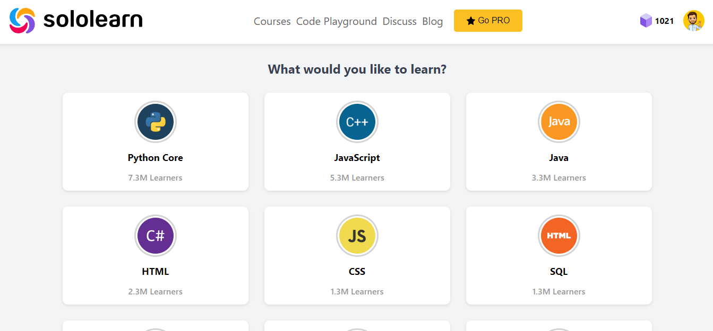
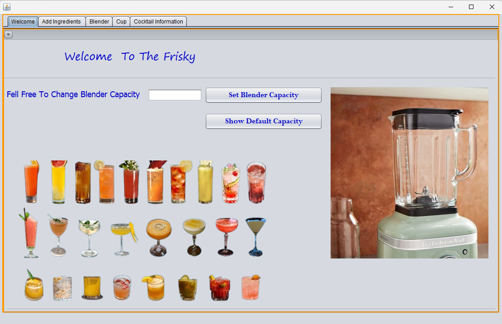
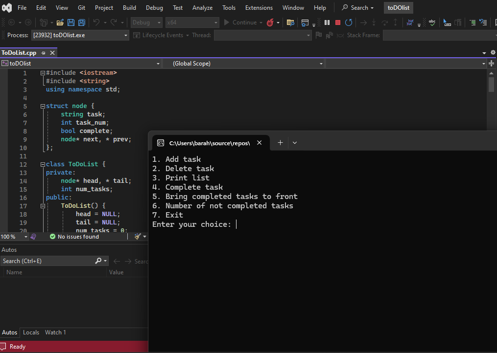

About me
A 21-year-old computer science student, Junior frontend, and an ambitious speaker who embodies flexibility, determination and passion for leadership. With an unwavering commitment to turning dreams into reality, baraa navigates the complexities of academia, coding and life relentlessly motivated., baraa's journey embodies the strength of perseverance and the transformative potential of static design. In his pursuit of excellence, he continues to embrace challenges as opportunities for growth, embodying leadership and resilience in every endeavour.
projects
-
SoloLearn
A Html css Project
 -
Cocktail Blender
This project is about blending fruits to make great and delicious Cocktails
 - To do list app
A simple C++ console-based To-Do List application that uses a doubly linked list to manage tasks efficiently. This project provides functionalities to add tasks, delete tasks, mark tasks as completed, reorder completed tasks to the front, and count incomplete tasks. It serves as an excellent learning tool for understanding linked list operations and basic task management.
